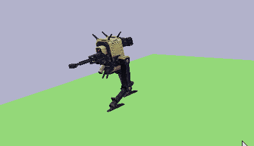

- Animated game objects
- Animation controls
- 2D Sprite and UI support
- Multiple Cameras support
- Don't mind the broken bot

Graduate Project
OpenGL engine project I worked over a year, adding new features and systems. We also developed a converter project along with it to convert the .glb models into custom protobuffer files to import into the engine.